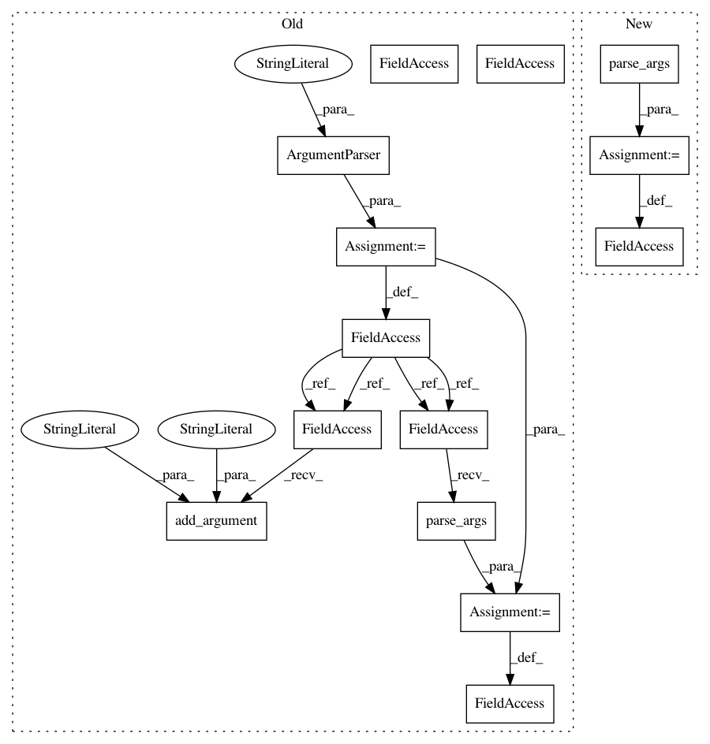

d2a5469bf3fe95490f19f6ccfdc9e64a21a6fba8,precise/convert.py,,,#,60
Before Change
del sess
if __name__ == "__main__":
parser = ArgumentParser(description="Convert keyword model from Keras to TensorFlow")
parser.add_argument("-m", "--model", default="keyword.net", help="Input Keras model")
parser.add_argument("-o", "--out", default="keyword.pb", help="Output TensorFlow protobuf")
args = parser.parse_args()
convert(args.model, args.out)
After Change
if __name__ == "__main__":
args = create_parser(usage).parse_args()
model_name = args.model.replace(".net", "")
convert(args.model, args.out.format(model=model_name))
In pattern: SUPERPATTERN
Frequency: 3
Non-data size: 14
Instances
Project Name: MycroftAI/mycroft-precise
Commit Name: d2a5469bf3fe95490f19f6ccfdc9e64a21a6fba8
Time: 2018-02-15
Author: matthew3311999@gmail.com
File Name: precise/convert.py
Class Name:
Method Name:
Project Name: dmlc/dgl
Commit Name: b133abb82e128bb091ffd1c299b427f3b3958cb3
Time: 2020-02-16
Author: mctt90@gmail.com
File Name: examples/mxnet/dis_kvstore/server.py
Class Name:
Method Name:
Project Name: dmlc/dgl
Commit Name: b133abb82e128bb091ffd1c299b427f3b3958cb3
Time: 2020-02-16
Author: mctt90@gmail.com
File Name: examples/pytorch/dis_kvstore/server.py
Class Name:
Method Name:
Project Name: MycroftAI/mycroft-precise
Commit Name: d2a5469bf3fe95490f19f6ccfdc9e64a21a6fba8
Time: 2018-02-15
Author: matthew3311999@gmail.com
File Name: precise/convert.py
Class Name:
Method Name: